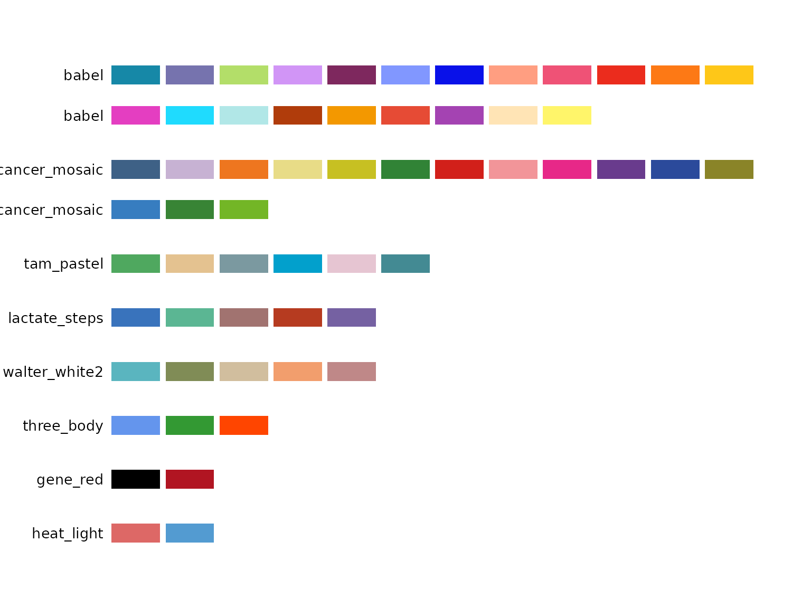
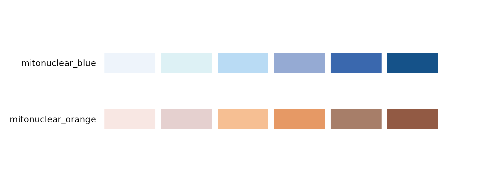
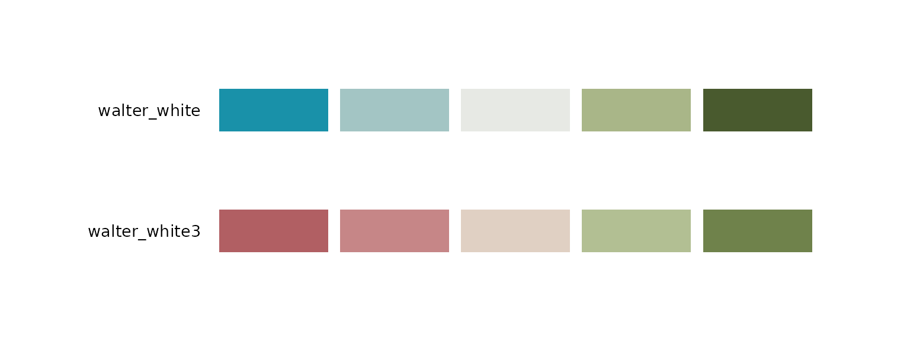

biopalette is a curated collection of image-inspired color palettes for biomedical visualization. Every included palette has a documented source, an intentional color order, a defined type, and notes about where it works well.
This article is a guide to the collection. Complete source
records—including the original image, color table, reference labels, use
cases, and limitations— are available in the palettes/
directory on GitHub.
Browse all palettes
Use list_palettes() for a compact inventory:
list_palettes()[c("name", "type", "n_color")]
#> name type n_color
#> 1 walter_white diverging 5
#> 2 walter_white3 diverging 5
#> 3 gene_red qualitative 2
#> 4 heat_light qualitative 2
#> 5 three_body qualitative 3
#> 6 lactate_steps qualitative 5
#> 7 walter_white2 qualitative 5
#> 8 tam_pastel qualitative 6
#> 9 cancer_mosaic qualitative 15
#> 10 babel qualitative 21
#> 11 mitonuclear_blue sequential 6
#> 12 mitonuclear_orange sequential 6Use palette_gallery() when choosing visually in an
interactive R session:
The complete collection is summarized below. “Source record” opens the full English curation record in this repository; “Tessera” opens the corresponding visual page in the companion Tessera collection.
| Palette | Type | Colors | Source | Details |
|---|---|---|---|---|
gene_red |
Qualitative | 2 | Better Call Saul poster | Source record · Tessera |
heat_light |
Qualitative | 2 | Bond ampholysis illustration, Nature (2024) | Source record · Tessera |
three_body |
Qualitative | 3 | Pan-cancer myeloid atlas, Cell (2021) | Source record · Tessera |
walter_white2 |
Qualitative | 5 | Breaking Bad pilot poster | Source record · Tessera |
lactate_steps |
Qualitative | 5 | Lactate-metabolism workflow, JECCR (2024) | Source record · Tessera |
tam_pastel |
Qualitative | 6 | Pan-cancer myeloid atlas, Cell (2021) | Source record · Tessera |
cancer_mosaic |
Qualitative | 15 | Pan-cancer myeloid atlas, Cell (2021) | Source record · Tessera |
babel |
Qualitative | 21 | Pan-cancer myeloid atlas, Cell (2021) | Source record · Tessera |
mitonuclear_blue |
Sequential | 6 | Mito-nuclear communication in aging, TIBS (2022) | Source record · Tessera |
mitonuclear_orange |
Sequential | 6 | Mito-nuclear communication in aging, TIBS (2022) | Source record · Tessera |
walter_white |
Diverging | 5 | Breaking Bad pilot poster | Source record · Tessera |
walter_white3 |
Diverging | 5 | Breaking Bad pilot poster | Source record · Tessera |
Qualitative palettes
Qualitative palettes distinguish unordered categories. The first
n colors are returned when a smaller set is requested,
because every stored color is a curated category color rather than a
stop on a continuous ramp.
pages <- palette_gallery(type = "qualitative", verbose = FALSE)
pages[["qualitative_page1"]]
Choose the palette size to match the real number of groups:
-
gene_redandheat_lightprovide restrained two-group contrasts; -
three_bodyprovides three strongly separated colors; -
walter_white2,lactate_steps, andtam_pastelcover common medium-sized groupings; -
cancer_mosaicandbabelsupport unusually large categorical displays.
Large qualitative palettes require help from position, direct labels, shape, faceting, or annotation. Twenty-one categories cannot be made effortless by color alone.
get_palette("babel", n = 5)
#> [1] "#1688A7" "#7673AE" "#B3DE69" "#D195F6" "#7E285E"Sequential palettes
mitonuclear_blue and mitonuclear_orange
represent one-direction change. Both run from a quiet light end to a
darker visual anchor.
pages <- palette_gallery(type = "sequential", verbose = FALSE)
pages[["sequential_page1"]]
For sequential palettes, n samples the complete ramp in
Lab color space. It does not take only the first n pale
stops:
get_palette("mitonuclear_blue", n = 3)
#> [1] "#EEF4FB" "#A7C2E3" "#155289"
get_palette("mitonuclear_orange", n = 8)
#> [1] "#F8E7E3" "#EAD7D5" "#EEC9B5" "#F4BA8C" "#E89E6B" "#C28968" "#A1745E"
#> [8] "#925A44"Use the light-to-dark direction for increasing values unless the scientific meaning requires the reverse. On white backgrounds, boundaries or grid lines help the lightest colors remain visible.
Diverging palettes
walter_white and walter_white3 represent
two directions around a pale center.
pages <- palette_gallery(type = "diverging", verbose = FALSE)
pages[["diverging_page1"]]
Use a diverging palette only when the center has a meaningful
interpretation, such as zero fold change, a clinical threshold, or a
reference estimate. walter_white is the safer
general-purpose option. The rose-to-green ends of
walter_white3 can be difficult for common red-green
color-vision deficiencies.
get_palette("walter_white", n = 7)
#> [1] "#1991A9" "#80B3BB" "#BAD1CF" "#E7E9E4" "#BEC7A6" "#889669" "#495A2E"Source labels and new mappings
Some source records associate colors with cell types, cancer types, workflow stages, or objects in a screen image. Those labels document where the colors came from; they do not force the same labels in a new dataset.
When remapping a palette:
- preserve a stable mapping throughout the project;
- explain the mapping in the figure legend;
- do not imply that biological meaning transfers with a HEX value;
- retain non-color cues when categories are numerous or close in appearance.
Use the selected palette
Once selected, the palette name is the complete handoff to plotting code:
# Unordered categories
scale_color_biopalette("three_body")
scale_fill_biopalette("tam_pastel")
# Ordered continuous values
scale_fill_biopalette_gradient("mitonuclear_blue")
# Signed values around zero
scale_color_biopalette_gradient("walter_white", midpoint = 0)Use reverse = TRUE when the direction should be flipped.
Palette names in the bundled collection are unique, so type
normally does not need to be specified.
Explore further
- Browse the complete GitHub source records for original images, extraction notes, reference labels, and limitations.
- Open Tessera palettes for a visual, reader-oriented view of the same named palettes.
- Use Palette Lab to switch the palettes across a consistent set of graphical displays.
- Read
vignette("tessera", package = "biopalette")to continue from palette discovery to data, R recipes, and complete figures.
Propose a palette
New palettes enter the public collection through review. A proposal should include the source image, source attribution, palette JSON, preview, intended type, use cases, and known limitations—not only an attractive vector of HEX values.
See the contribution guide before opening a pull request.